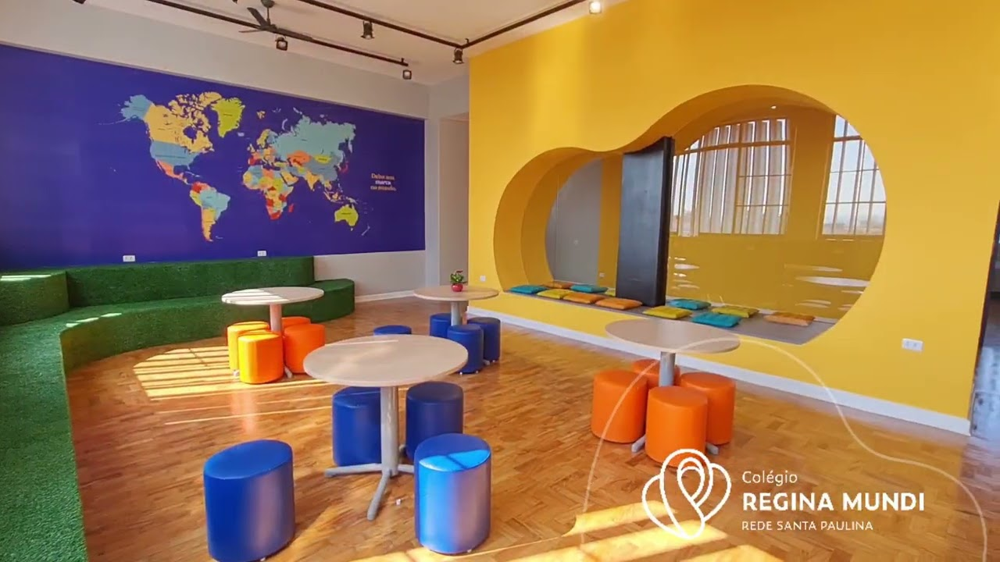
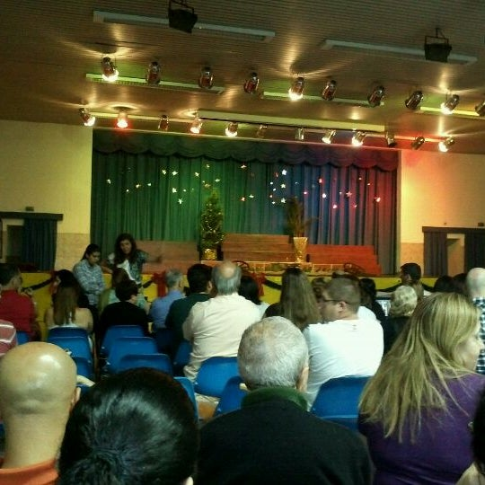
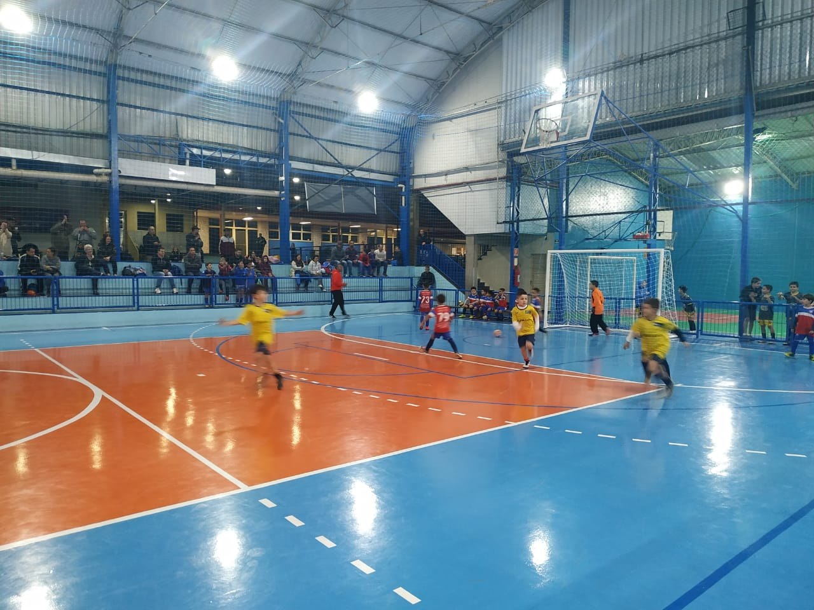

A Matemática é a ciência que relaciona as práticas do cotidiano e a natureza ao raciocínio humano e à lógica numérica. A Matemática é uma ciência que relaciona a lógica com situações práticas habituais. Ela desenvolve uma constante busca pela veracidade dos fatos por meio de técnicas precisas e exatas.